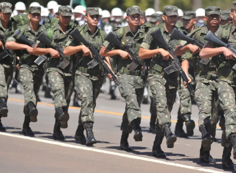

Olá, !
Perfil
Sair
Formação
Como funciona?
O processo de formação do policial do exército é dividido em 3 etapas, que são: Internato, Operação Boina Verde e Operação Braçal! Esse período básico dura em torno de 3 meses!
Internato
Para a introdução à carreira, o militar passará por um período de aproximadamente um mês de reclusão (variando conforme cada Organização Militar), durante o qual será imerso em uma nova rotina, onde tudo será cobrado no mais alto padrão, para desenvolver disciplina e adotar novos hábitos. Nesse estágio, ele receberá diversas instruções que o familiarizarão com os valores e costumes da vida militar. Tudo será ensinado de maneira rigorosa, pois “Uma vez ensinado, mil vezes cobrado!”.
A rotina é planejada para desafiar o psicológico e o físico do militar, com treinamentos diários e um cronograma rigoroso de instruções, garantindo que toda a teoria seja transmitida com precisão e disciplina. O toque de alvorada ocorre por volta das 5h30, e a liberação apenas por volta das 23h30, submetendo o militar a um ritmo intenso e disciplinado ao longo de todo o dia.
Operação Boina Verde
Após um período intenso de preparação e aprendizado, o militar agora colocará em prática tudo o que foi ensinado. A Operação Boina Verde consiste em um acampamento de 7 dias, onde ele enfrentará diversas provações: fome, frio, sede, calor extremo e pernoites no mato. Nesse ambiente desafiador, o militar será testado ao limite. Depois dos 7 dias, o militar terá a honra de receber a boina verde, símbolo de resiliência!.
Durante o campo, ele participará de uma marcha de 12 km, carregando mochila, capacete e armamento completo. As instruções incluem silenciamento de sentinela, progressão diurna e noturna, HPPS, tiro de fuzil e pistola, além de técnicas de camuflagem. Isso sem contar os treinos físicos por volta das 4 da manhã, sempre sendo feitos com o fuzil equipado.
Operação Braçal
Após concluir as duas etapas iniciais, o militar já está qualificado como integrante de infantaria convencional, com o diferencial de ter passado por uma rotina diversificada e rigorosa de treinamentos, exigida pelo alto padrão das tropas especiais. Agora, com a Operação Braçal, ele avançará para a formação de Policial do Exército. Durante 7 dias de campo, o militar será preparado para a atuação de infante policial, portando seu próprio armamento (fuzil, submetralhadora ou espingarda) em todos os momentos.
As instruções dessa etapa incluem Operação de Busca e Apreensão (OBA), Posto de Bloqueio e Controle de Estradas (PBCE), Patrulhamento Ostensivo (PO), Operação de Controle de Distúrbios (OCD), além de testes de resistência a spray de pimenta e gás lacrimogêneo. Depois dos 7 das de campo, o militar será considerado um policial do exército e receberá o braçal policial, símbolo da PE!

Receba mais informações
Cadastre-se ou faça login para acessar conteúdos exclusivos sobre a Polícia do Exército. Junte-se a nós!